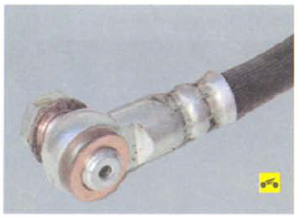

Замена тормозных шлангов
На автомобиле применяют четыре тормозных шланга: два (задние) для соединения трубопроводов с рабочими цилиндрами задних тормозных механизмов и два (передние) для соединения трубопроводов с рабочими цилиндрами передних тормозных механизмов.
Вам потребуются: ключи «на 12», «на 14», пассатижи...
..а также специальный ключ для гаек тормозных трубопроводов «на 10».
Полезный совет: Для отворачивания гаек трубок всегда применяйте специальные ключи, так как гайки сильно затянуты и обычно корродированы, вследствие чего при пользовании обычными ключами грани гаек сминаются.
1. Для замены шланга тормозного механизма переднего колеса снимите колесо со стороны заменяемого шланга.
2. Отверните гайку крепления трубки...
3. ...снимите запорную скобу с верхнего наконечника шланга..
4. ...и отсоедините шланг от трубопровода.
5. Выверните болт-штуцер крепления нижнего наконечника шланга к рабочему цилиндру тормозного механизма переднего колеса.
 Примечание: Обратите внимание на две медные уплотнительные шайбы, расположенные по обе стороны наконечника шланга. При сборке эти шайбы замените новыми.
6. Выведите резиновую втулку тормозного шланга из держателя амортизаторной стойки.
7. Снимите запорную скобу держателя шланга на кронштейне амортизаторной стойки передней подвески...
8. ...выведите шланг из кронштейна...

9. ...и снимите шланг.
10. Установите новый шланг в порядке, обратном снятию.
Предупреждение: Проследите за тем, чтобы шланг не перекручивался при установке вдоль оси.
11. Аналогично замените второй передний шланг.
12. Для замены переднего шланга тормозного механизма заднего колеса отверните гайку крепления тормозной трубки к переднему наконечнику шланга...
13. ...выверните болт крепления наконечника...
14. ...и выньте наконечник из кронштейна на кузове.
15. Отверните гайку крепления тормозной трубки к заднему наконечнику шланга...
16. ...выверните болт крепления наконечника...
17 ..выньте наконечник из кронштейна на продольном рычаге и снимите шланг.
18. Для замены заднего шланга тормозного механизма заднего колеса отверните гайку крепления тормозной трубки к переднему наконечнику шланга...
19. ...снимите скобу крепления наконечника...
20. ...выньте наконечник из кронштейна на продольном рычаге...
21. ...выверните второй наконечник тормозного шланга из колесного цилиндра...
22. ...и снимите шланг.
23. Аналогично снимите шланги с другой стороны автомобиля.
24. Установите тормозные шланги в порядке, обратном снятию.
25. После замены шлангов удалите воздух из тормозной системы (см. «прокачка гидропривода тормозной системы»).